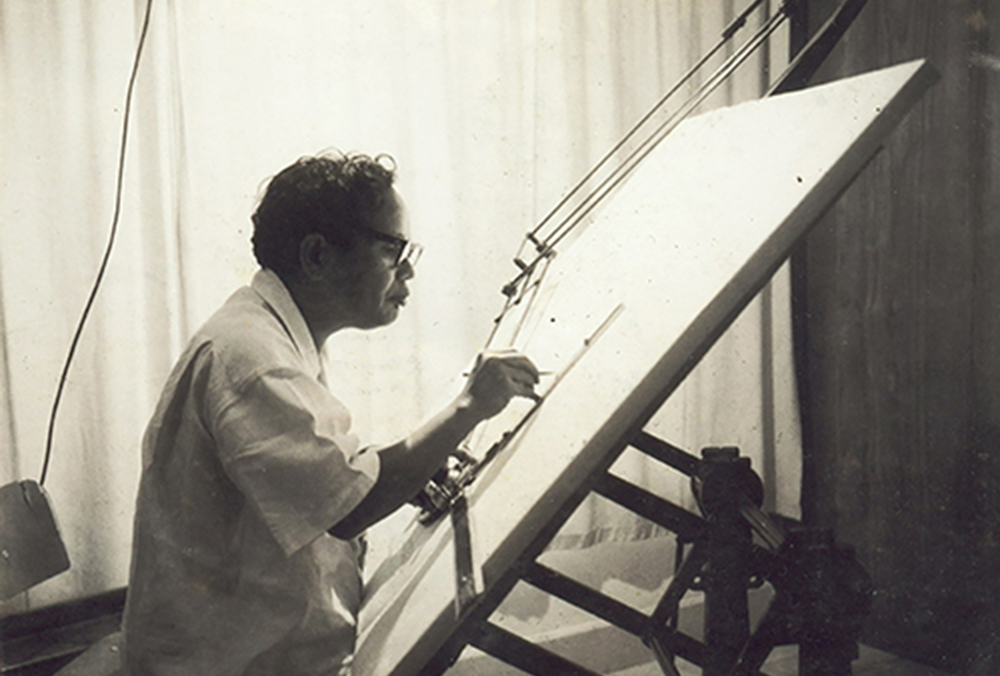
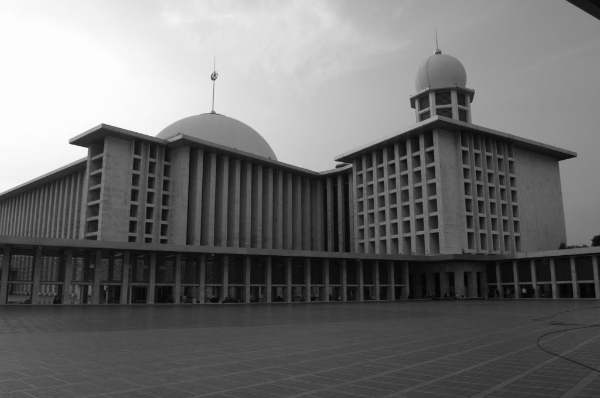

16 Desember 1912 - Lahir di Bonan Dolok, Sianjur Mulamula, Samosir, Sumatra Utara
1927 - Menyelesaikan pendidikan formal di H.I.S. Narumonda, Tapanuli
1931 - Menyelesaikan pendidikan formal di Koningen Wilhelmina School (K.W.S.), Jakarta
1950 - Menyelesaikan pendidikan formal di Academic van Bouwkunst Amsterdam, Belanda
1965 - Kepala DPU Kotapraja Bogor
Friedrich Silaban juga berperan besar dalam pembentukan Ikatan Arsitek Indonesia (IAI). Pada April 1959, Ir. Soehartono Soesilo yang mewakili biro arsitektur PT Budaya dan Ars. F. Silaban merasa tidak puas atas hasil yang dicapai pada Konferensi Nasional di Jakarta, yakni pembentukan Gabungan Perusahaan Perencanaan dan Pelaksanaan Nasional (GAPERNAS) di mana keduanya berpendapat bahwa kedudukan "perencana dan perancangan" tidaklah sama dan tidak juga setara dengan "pelaksana". Mereka berpendapat pekerjaan perancangan berada di dalam lingkup kegiatan profesional (konsultan), yang mencakupi tanggung jawab moral dan kehormatan perorangan yang terlibat, karena itu tidak semata-mata berorientasi sebagai usaha yang mengejar laba (profit oriented). Sebaliknya pekerjaan pelaksanaan (kontraktor) cenderung bersifat bisnis komersial, yang keberhasilannya diukur dengan besarnya laba dan tanggung jawabnya secara yuridis/formal bersifat kelembagaan atau badan hukum, bukan perorangan serta terbatas pada sisi finansial.
Akhir kerja keras dua pelopor ini bermuara pada pertemuan besar pertama para arsitek dua generasi di Bandung pada tanggal 16 dan 17 September 1959. Pertemuan ini dihadiri 21 orang, tiga orang arsitek senior, yaitu: Ars. Friedrich Silaban, Ars. Mohammad Soesilo, Ars. Liem Bwan Tjie dan 18 orang arsitek muda lulusan pertama Jurusan Arsitektur Institut Teknologi Bandung tahun 1958 dan 1959. Dalam pertemuan tersebut dirumuskan tujuan, cita-cita, konsep Anggaran Dasar dan dasar-dasar pendirian persatuan arsitek murni, sebagai yang tertuang dalam dokumen pendiriannya, “Menuju dunia Arsitektur Indonesia yang sehat”. Pada malam yang bersejarah itu resmi berdiri satu-satunya lembaga tertinggi dalam dunia arsitektur profesional Indonesia dengan nama Ikatan Arsitek Indonesia disingkat IAI.
Untuk membaca lebih lanjut bisa dengan mengklik link berikut ini

Bapak Friedrich Silaban sedang menggambar rancangannya
